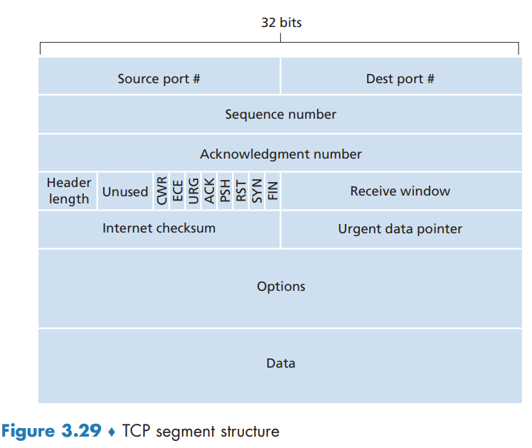

↩️ ttm4100
Connection-Oriented Transport: TCP
In order to provide reliable data transfer, TCP relies on many of the underlying principles discussed in the previous section, including error detection, retransmissions, cumulative acknowledgments, timers, and header fields for sequence and acknowledgment numbers
The TCP Connection
TCP is said to be connection-oriented because before one application process can begin to send data to another, the two processes must first "handshake" with each other.
TCP protocol runs only in the end systems and not in the intermediate network elements (routers and link-layer switches), the intermediate network elements do not maintain TCP connection state.
A TCP connection provides a full-duplex service: If there is a TCP connection between Process A on one host and Process B on another host, then application-layer data can flow from Process A to Process B at the same time as application-layer data flows from Process B to Process A.
A TCP connection is also always point-to-point, that is, between a single sender and a single receiver. So-called "multicasting" - the transfer of data from one sender to many receivers in a single send operation - is not possible with TCP.
The process that is initiating the connection is called the client process, while the other process is called the server process.
TCP directs this data to the connection’s send buffer, which is one of the buffers that is set aside during the initial three-way handshake. From time to time, TCP will grab chunks of data from the send buffer and pass the data to the network layer.
The maximum amount of data that can be grabbed and placed in a segment is limited by the maximum segment size (MSS). The MSS is typically set by first determining the length of the largest link-layer frame that can be sent by the local sending host (the so-called maximum transmission unit, MTU), and then setting the MSS to ensure that a TCP segment (when encapsulated in an IP datagram) plus the TCP/IP header length (typically 40 bytes) will fit into a single link-layer frame.

TCP Segment Structure

Sequence Numbers and Acknowledgment Numbers
The sequence number for a segment is the byte-stream number of the first byte in the segment.
The acknowledgment number that Host A puts in its segment is the sequence number of the next byte Host A is expecting from Host B.
Because TCP only acknowledges bytes up to the first missing byte in the stream, TCP is said to provide cumulative acknowledgments.
Telnet: A Case Study for Sequence and Acknowledgment Numbers
Note that the acknowledgment for client-to-server data is carried in a segment carrying server-to-client data; this acknowledgment is said to be piggybacked on the server-to-client data segment
Round-Trip Time Estimation and Timeout
Estimating the Round-Trip Time
SampleRTT, for a segment is the amount of time between when the segment is sent (that is, passed to IP) and when an acknowledgment for the segment is received. EstimatedRTT is a weighted average of the SampleRTT values:
EstimatedRTT = (1 – α) * EstimatedRTT + α * SampleRTT
The recommended value of α is α = 0.125. In addition to having an estimate of the RTT, it is also valuable to have a measure of the variability of the RTT. DevRTT is an estimate of how much SampleRTT typically deviates from EstimatedRTT:
DevRTT = (1 – β) * DevRTT + β * | SampleRTT – EstimatedRTT |
The recommended value of β is 0.25.
Setting and Managing the Retransmission Timeout Interval
TCP’s method for determining the retransmission timeout interval:
TimeoutInterval = EstimatedRTT + 4 # DevRTT
An initial TimeoutInterval value of 1 second is recommended.